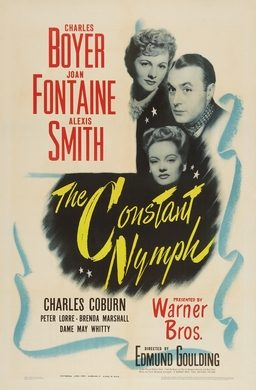

THE STANFORD THEATRE
Now Showing
·
Upcoming
·
Past
·
Search
January 2 - 12, 2014
Remembering Joan Fontaine January 2014
2 bills
January 2 - 5
Rebecca (1940)
126 min
Suspicion (1941)
99 min
January 9 - 12
Letter from an Unknown Woman (1948)
86 min

The Constant Nymph (1943)
112 min